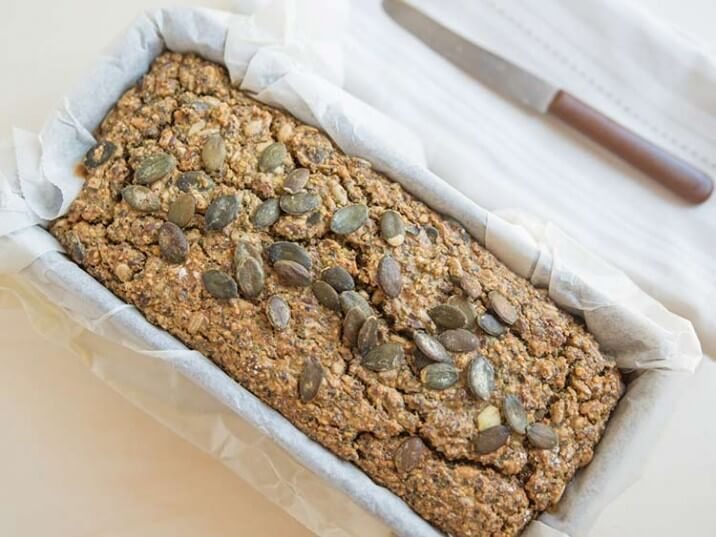

Brot mit Quark (V)
(20 Min, 11 Port., F: 29g, K: 3g, E: 13g)

Zutaten
- 200 g gemahlene Mandeln, 150 g geschrotete Leinsamen, 25 g gemahlene Kürbiskerne, 250 g Magerquark, 5 Eier (Größe M), 2 EL Kürbiskerne, 2 EL Sonnenblumenkerne, 1 Päckchen Backpulver, 1 TL Kakaopulver, ½ TL Kreuzkümmel, 2 TL Meersalz
Vorbereitung
- Gemahlene Mandeln und Kürbiskerne, Leinsamen, Backpulver, Kakao, Kreuzkümmel und Salz in einer Schüssel vermischen. Sonnenblumen- und 1 EL Kürbiskerne dazugeben und unterrühren.
- Quark und Eier zuerst in einer zweiten Schüssel vermischen, dann zu den trockenen Zutaten dazugeben. Alles zu einem Teig vermischen. Eine Kastenform mit Backpapier auslegen und den Teig hineinfüllen.
- Die restlichen Kürbiskerne über den Brotteig streuen und leicht andrücken
Backen
- Teig für 50 bis 60 Minuten im vorgeheizten Backofen bei 160°C (Umluft) backen.
Servieren
- Nach der Backzeit das Brot aus der Kastenform nehmen und vollständig auskühlen lassen.
Originalrezept unter: Lowcarbkompendium.com